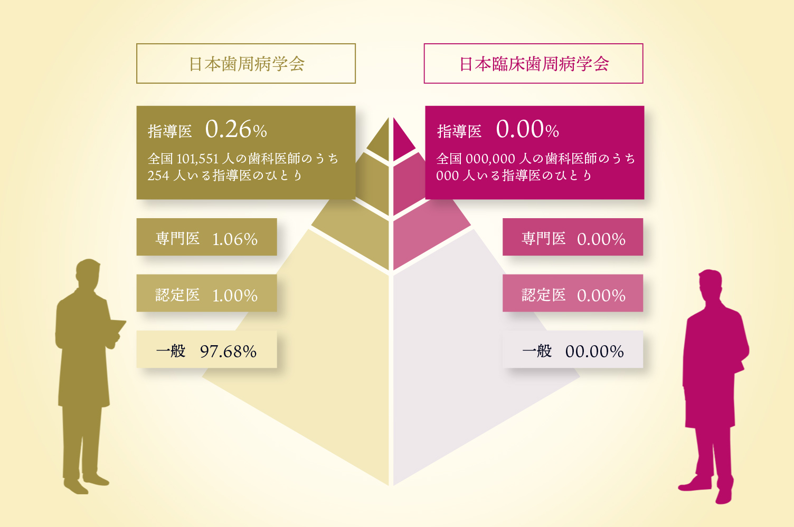

専門医・指導医と
認定衛生士によるチーム医療
歯科医師と歯科衛生士それぞれが歯周病に関する専門家としての知識・技術を持ってチームとして連携することで、より安全・確実な治療をご提供
当院の院長は歯周病を専門とする歯周病専門医であり、日本歯周病学会の認定指導医です。さらに歯科衛生士は、日本歯周病学会・日本臨床歯周病学会の認定歯科衛生士です。
当院では専門医・指導医として持っている知識や技術を元に、患者様一人ひとりに合わせた治療やメインテナンスを行っています。
虫歯の数は減少し高齢者の残存歯数が増えてきていることは良い傾向ですが、その一方で歯周病はいまだに増加傾向にあります。
多くの方が歯科医院を受診されているにも関わらず、虫歯の治療が優先で歯周病の検査、治療を受けたことがない方、歯周病であることに 気づいていない方、あるいは治療を受けても実際に改善されていない方が意外に多いのです。
歯周病治療は歯科医師の知識や技術だけでなく、歯周病治療の主役である歯科衛生士の知識と技術が大きく治療結果を左右します。 多くの歯科医院がある中で、歯周病治療は未だにしっかりと行えているところとそうでないところの差が生じる分野であることが これらの原因です。またお口の治療は、何度も～ケアをしなければ改善することはできません。

当院の院長は、特定非営利活動法人「日本歯周病学会」に認められた歯周病専門医です。歯周病専門医とは、歯周病治療に関する知識と技術が認められた歯科医師が認定される資格で、歯科医師全体の1％ほどしかいません。また、「日本臨床歯周病学会」の指導医と「日本歯周病学会」の専門医・指導医、さらに両学会の認定衛生士としても認められています。
歯周病の専門家として、歯周病に関することならどんなことでも対応できるのが当院の大きな強みです。歯周病に関することでしたら、まずは当院にご相談ください。
日本歯周病学会は、歯周病を克服することにより自分の歯を1本でも多く残すことを目的に 1957年に設立された学術団体です。会員総数は2021年5月31日現在で11,907名を数えます。
日本臨床歯周病学会は1983年に「臨床歯周病談話会」としてスタートし、歯周治療の研鑽を通じて歯科臨床の向上に努め、もって国民の健康、福祉の増進に寄与することを目的としている学会です。
当院は日本歯周病学会の認定を受けた歯周病専門医や歯周病学会認定歯科衛生士が在籍しており、歯周病治療に特化してます。
専門医・指導医と
認定衛生士によるチーム医療
歯科医師と歯科衛生士それぞれが歯周病に関する専門家としての知識・技術を持ってチームとして連携することで、より安全・確実な治療をご提供
歯科衛生士担当制
治療後のメインテナンスを患者様ごとに同じ歯科衛生士が行う「歯科衛生士担当制」を採用しています。
院内女性歯科技工士常駐
当院には院内女性歯科技工士が常駐しており、患者様に合わせた詰め物・被せ物などを作製しています。
クリニカル
コーディネーター
患者様の症状や治療の希望について伺うクリニカルコーディネーターという専任スタッフが在籍しています。
他医院からの紹介
セカンドオピニオン
他院で提案された治療内容や診察内容に疑問があるもののうまく伝えられない場合などは、ぜひ当院にご相談ください。
「ユミデンタルオフィス」は、お口から皆様の心とからだの健康を支えることをコンセプトにしています。